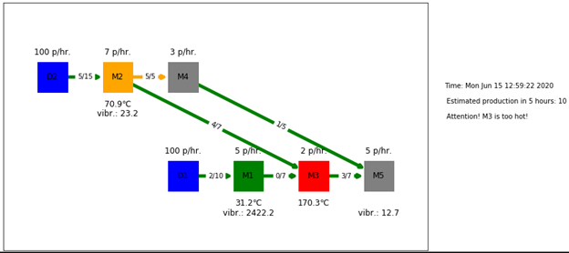

The framework covers aspects related to Digital Twin data representation (graph-based data structures for assets data and processes), data storage (assets and time-series data), and support for discrete/continuous simulation (e.g., estimation of production capacity).
The purpose of the framework is to provide the mechanisms to represent and store data in a way that can capture assets and time-series data, while at the same time can offer efficient access to the data and ability to use the stored data for various types of simulations (discrete/flow).
The framework is meant to help factories IT personnel in the process of representing assets and processes within factories and storing data about them, and combining the information with real-time sensor data, to facilitate analytics tasks such as simulations.
A typical usage of the framework is depicted below, where information about assets and processes is captured in a flexible graph data model (nodes representing assets, connections representing flows of parts between assets), and sensor data is connected to graph data, that in turn is used for analytical tasks such as simulations.

The illustration below depicts a UI of the implemented prototype, where a set of processing machines (nodes) and the flow of parts across the machines (arrows) is depicted, together with production capacity estimation based on discrete simulation of production at a certain point in time (colours depict various types of information based on sensor data).
